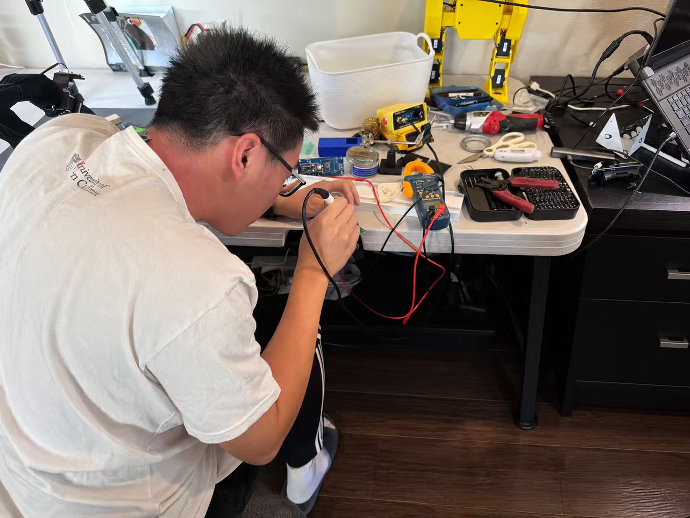
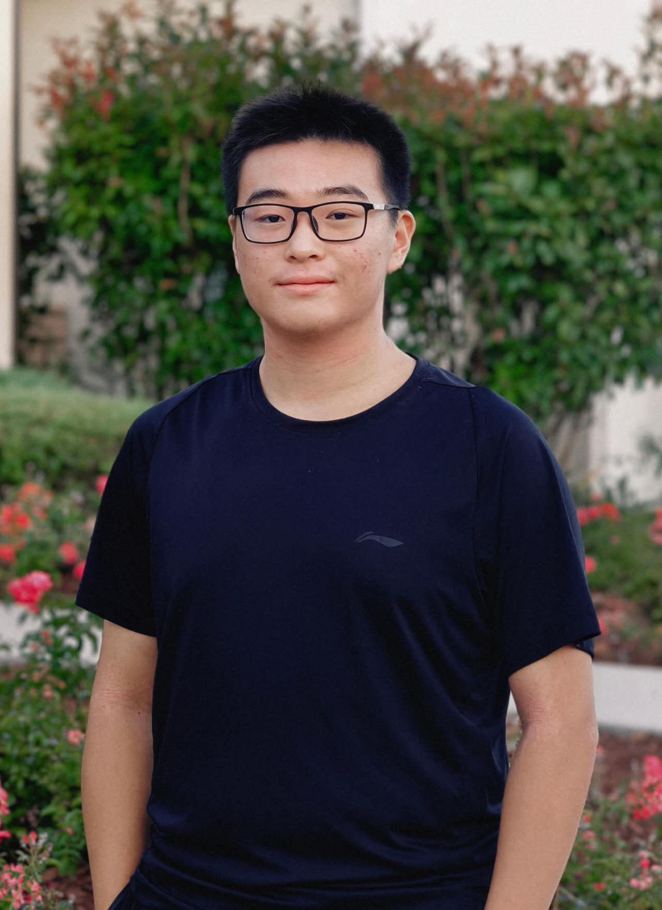

HANCHENG “HENRY” WANG · CCA ’27
Henry
Wang.
I’m a senior at Canyon Crest Academy. I build devices, play badminton, and lead a Super Joey club in San Diego.


From the workbench.Two views of my SkinGuard prototype.
See how the system works →
See the methods & limits ↗
SELECTED WORK & EXPERIENCES
What I’ve been
working on.
Some of this happens at a workbench.
Some of it happens with other people.

SkinGuard
I started with a question about skin care, then built a device and app to record changes over time.
Explore the project ↗
Super Joey Foundation
Super Joey Foundation, sun-safety outreach, and practical support for families.
See community work ↗
CCA badminton
Three years on the school team, including two on varsity.
On the badminton court ↗SUMMER, IN THE LAB
Summer
engineering.
At USC, our team built and tested robots. At Rose-Hulman, a loose wire almost ended our final demonstration. These are some of the moments I remember from both programs.
Explore my summer programs


BEHIND THE PROJECTS
Hi, I’m Henry.
I moved from China to the United States in eighth grade. Today, I’m a senior at Canyon Crest Academy in San Diego, exploring how engineering can connect physical systems with everyday needs.
Outside the workbench, you’ll find me on a badminton court or working with my Super Joey club.
More about me